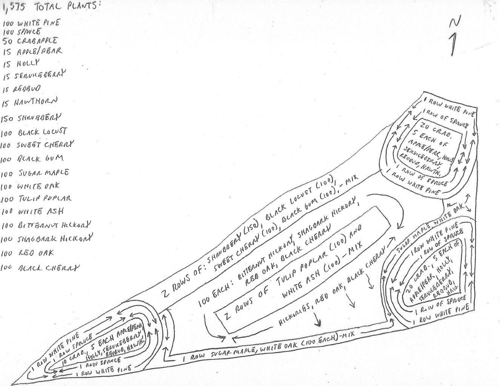

Concept
The Forest UpTop is a re-established Red Oak – Mixed Northern Hardwood community in a former agricultural field. It was planted over a 3-year period, beginning in 2005, under a 15-year NRCS (Natural Resources Conservation Service) CREP (Conservation Reserve Enhancement Program) contract that was recently renewed following a one-year lapse. The field was planted in accord with a Planting Map, shown above, designed by Service Forester Tim Cole of the Pennsylvania DCNR (Department of Conservation and Natural Resources). The forest lies on a hilltop South of the two Successional Forest areas and along the property’s Southern border. (The eastern-most of the Successional Areas includes part of the original remnant Hemlock – Red Oak – Mixed Norther Hardwood community.) Over the past fifteen years both Big Bluestem and Indiangrass have migrated from the Grassland in the valley below and now are well established in the areas not yet canopied over. The forest requires only an occasional mowing of invasive shrubs. We are undertaking an enhancement effort to replant some of the tree species that did not survive and to introduce several more shallow-rooted species in areas where top soil depth is shallow.
Steps
- Select a site
- The segment of the forest noted above, selected (complete)
- Record it
- Images
- Plant Species
- Inventory wildlife (fish, birds, insects) in or using the site
- Base Maps
- Plan
- Species whose numbers could be increased
- Species whose numbes could be decreased
- Species not currently pesent whose introduction could be beneficial
- Plant Palettes
- Planting Map
- Implement
- Sequence of actions
- Resources needed not currently available
- Timeline
- Assess
- Narrative
- Data
- Notes